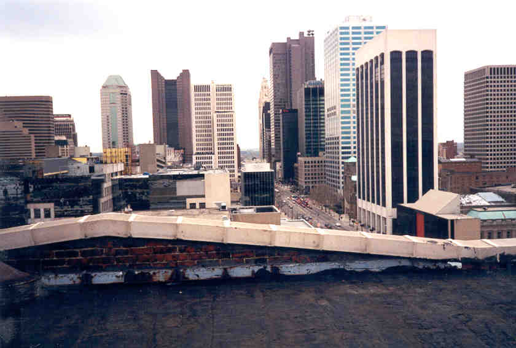
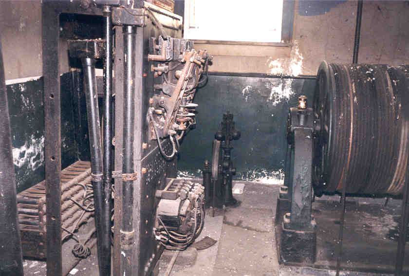
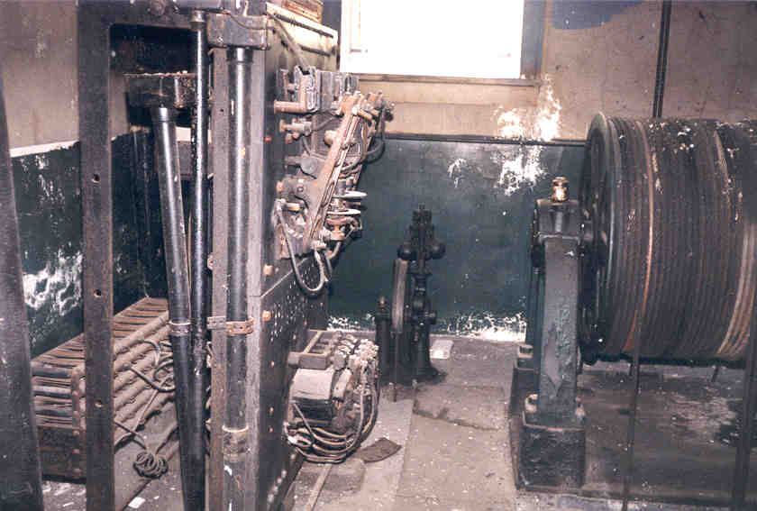

The Roof
The roof gives an amazing view from ten stories above the ground. Although you're visible almost anywhere you stand, people don't tend to look up here very often, so you're basically pretty safe. Just don't fall off.

At the top of the south stairwell, before you go through the door onto the roof, there are a couple interesting places. One is the works for the main elevator; the other is a kind of maintenance room. Out on the roof is a big vertical pipe I took a picture of for some reason.
 


Great stuff. Don't spend too much time up here, though; I hear rumors that caretakers of the building live not too far away. Not that it'd be hard to hide inside if the cops were called.

Back